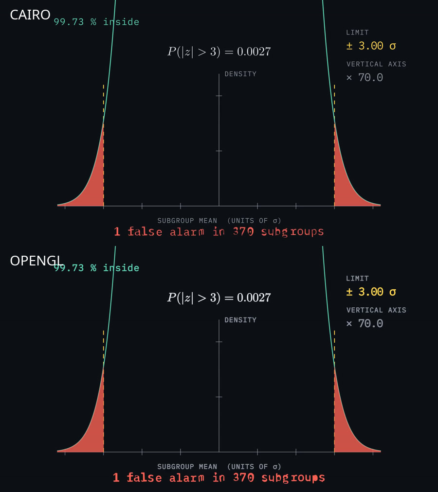
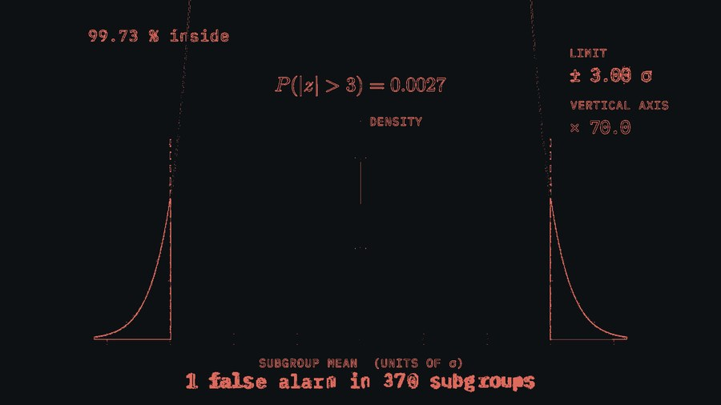

One act rendered both ways on the same machine, then a keep-or-drop call.
Drop it. On this machine ManimCE's OpenGL renderer is 24 % slower than cairo on the same content, renders no better, and breaks every camera move in the curriculum. There is nothing to buy.
Level II part one — the ±kσ sweep, the ×70 axis stretch, two ValueTracker
passages, per-frame always_redraw polygons, LaTeX and both site fonts. 105 s of
1080p60 video, 27 play() calls. The act's camera move is in part two, which was
excluded so the two renderers were given identical work.
Both runs: -qh --disable_caching, silent, output redirected to
/tmp so the production files were untouched. The OpenGL run used real hardware:
AMD Radeon 780M (radeonsi, Mesa 25.2.8), OpenGL 4.6 Core, reached
headlessly through EGL — Manim's own fallback when there is no X display.
| Measure | cairo | opengl | Reading |
|---|---|---|---|
| Wall time | 1m 51.5s | 2m 17.9s | OpenGL is 23.7 % slower |
| Output | 1920×1080@60, 105.25 s | 1920×1080@60, 105.22 s | two frames shorter, otherwise identical |
| File size | 3.48 MB | 3.59 MB | +3 %, from slightly heavier edges |
| Voiceover | works | works | aac track and .srt both produced under GL |
| Camera moves | works | AttributeError | 'OpenGLCamera' object has no attribute 'frame' |
Under cairo, MovingCameraScene exposes self.camera.frame — a mobject
you animate like any other. Under the OpenGL renderer the camera is the frame, so
self.camera.frame does not exist. The full-act GL render died on that line after
rendering all of part one.
Seven of the nine acts move the camera, and each does it the same way: save state, scale and
move the frame, restore. Adopting the GL renderer means either a compatibility shim inside
NarratedCameraScene with two code paths, or rewriting every camera move — to buy a
renderer that is slower. That is the whole argument.
Matched frames were sampled at eight timestamps and differenced pixel by pixel. Mean absolute difference ran between 0.26 and 1.26 out of 255, and every pixel that differed by more than 16 sat on a glyph or stroke boundary — 1.4 % to 1.9 % of the frame. Layout, numbers, fonts and colours are the same.


narration.py.manim --renderer=opengl -qh --write_to_movie --media_dir /tmp/glmedia ….